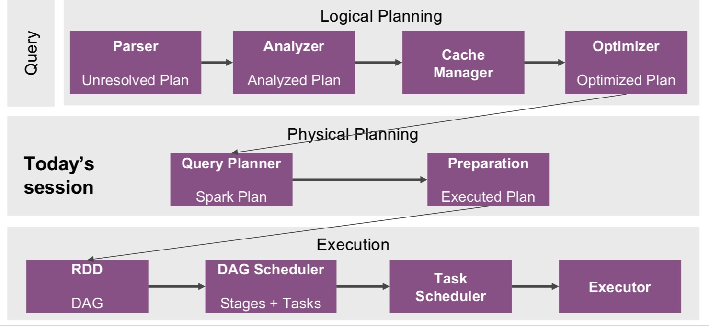
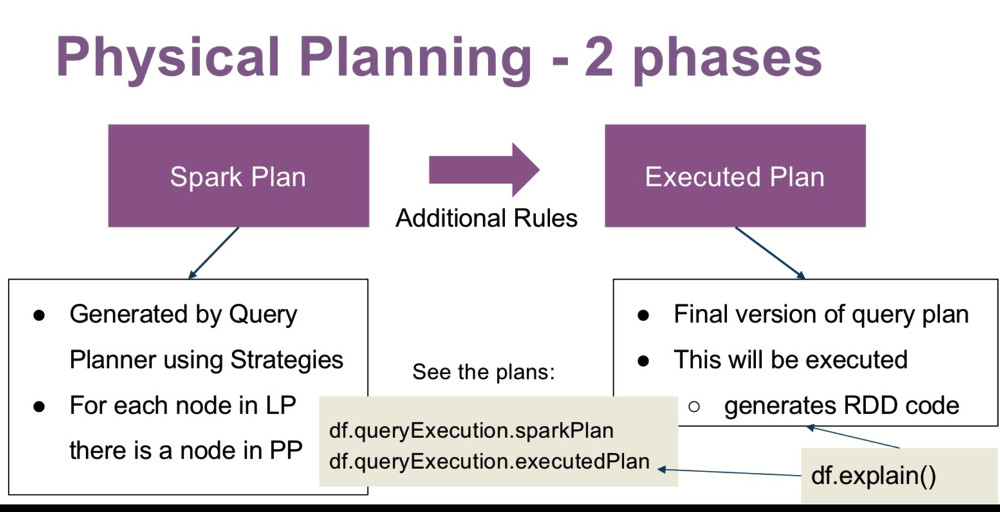
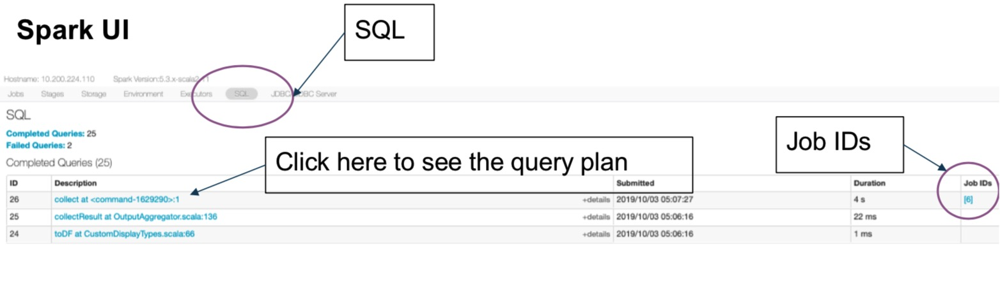
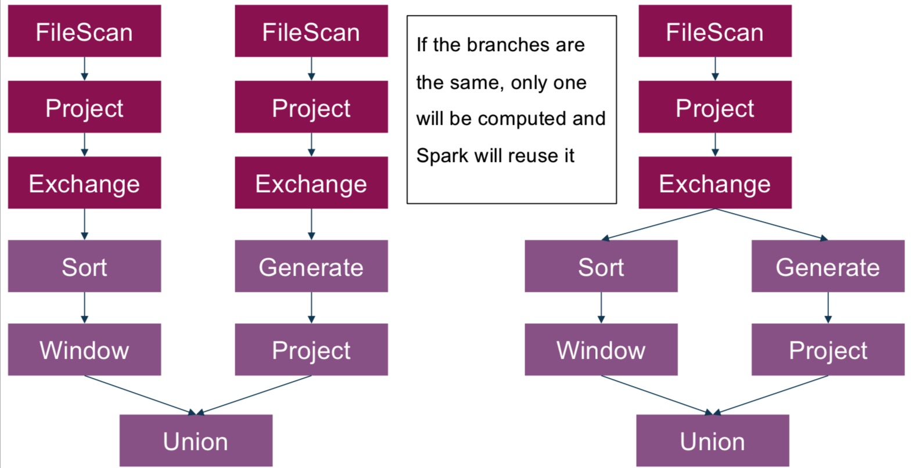
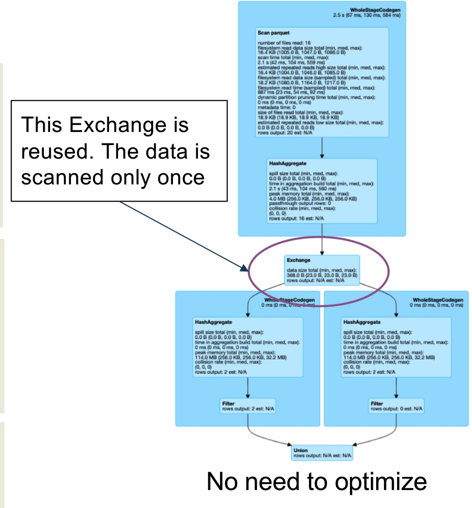
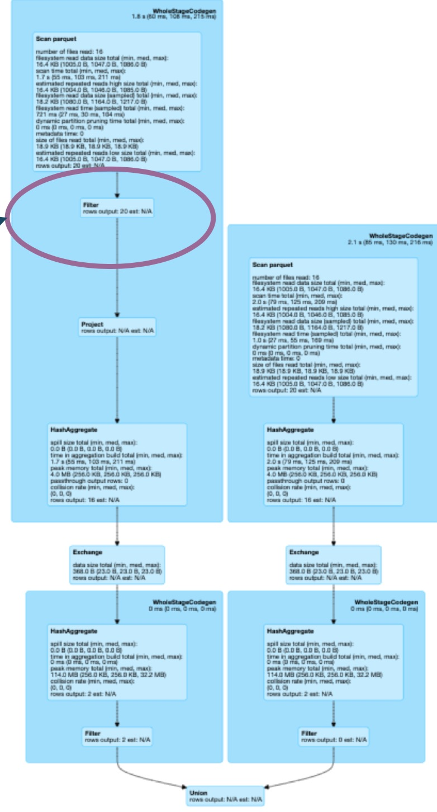
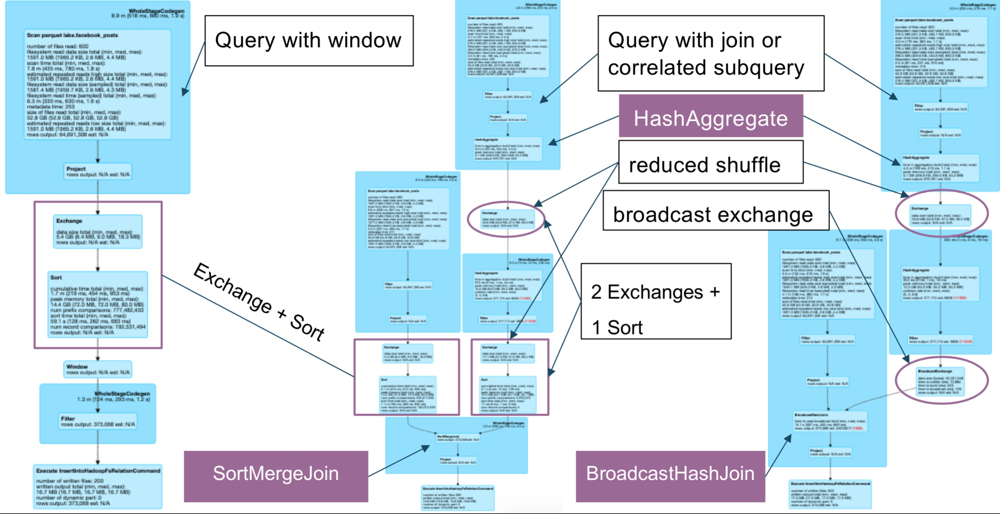
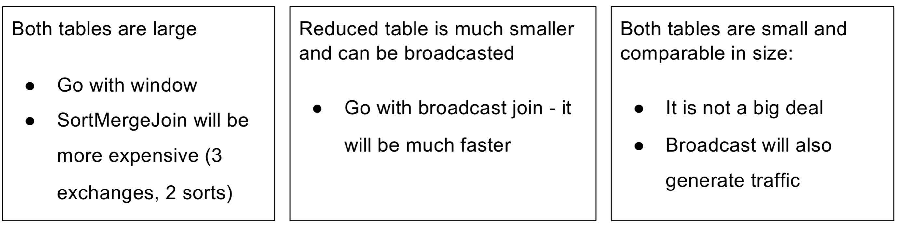
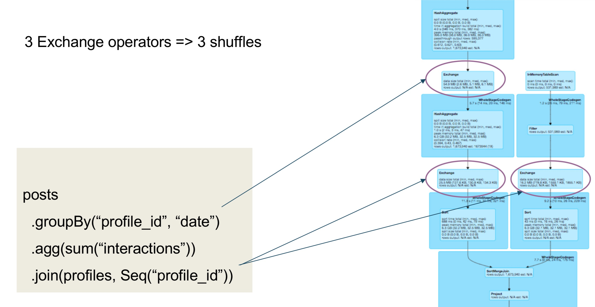
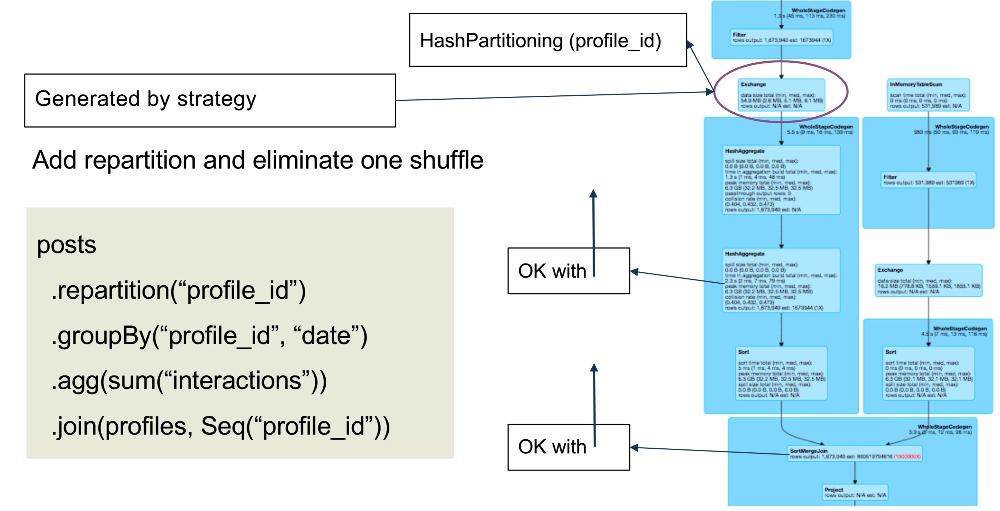

SQL查询执行
SQL查询的执行可以分为三部分：逻辑计划（Logical Planning），物理计划（Physical Planning）和执行（Execution）。

逻辑计划
- SQL查询的树的表示
- 它包含执行的工作内容，但不包含具体的细节
- 组成包括：
- 关系运算符，Filter, Join, Project, … (
DataFrame的转换) - 表达式：列转化，过滤条件，join的条件
- 关系运算符，Filter, Join, Project, … (
物理计划
物理计划阶段，将一个优化后的逻辑计划转化成物理计划。物理计划连接了逻辑计划和RDD，包含查询执行的详细信息。

Spark Plan使用策略的查询计划(Query Planner)生成，例如，逻辑计划的Join可以对应到物理计划的SortMergeJoin或者BroadcastHashJoin。

SQL优化技巧
示例一：复用exchange
exchange代表shuffle，物理中的物理数据移动。

复用exchange需要：
- 不同的分支是完全相同的
- 可以通过
spark.sql.exchange.reuse来关闭 - 可以节省I/O和网络开销，因为只会扫描一遍数据，只有一次shuffle。
下面是例子：
数据表
| post_id | profile_id | date | interactions |
|---|---|---|---|
| 1 | 1 | 2019-01-01 | 20 |
| 2 | 1 | 2019-01-01 | 15 |
| 3 | 1 | 2019-01-01 | 50 |
需要执行的SQL：
1 | df.groupBy(“profile_id”) |
使用union的·方式来改写：
1 | val dfSumBig = df |

假设更改sql语句, dfSumSmall需要过滤profile_id不为空的情况：
1 | val dfSumBig = df |
因为两者的语句不一样，无法复用exchange

将sql改成这样，使得dfSumSmall前面的部分与dfSumBig一样。
1 | val dfSumSmall = df |
Spark优化器会将filter($”profile_id”.isNotNull)下推到数据读取中，从而生成与dfSumBig不同的sql。这时，可以停止优化器的配置：
1 | spark.conf.set( |
这种设置适用于：
- 单个读取耗时的数据源，这个数据源上的有不同的操作符，然后通过
Union或Join来合并。
相同作用通过缓存(cache)也能做到，但是缓存(cache)：
- 缓存对于大的数据集不一样有效，大的数据集不一样能放入缓存层
- 把数据放入缓存层，会因此额外的开销
示例二：数据聚合
在下面的数据表中，需要得到每个profile最大interaction的记录。
| post_id | profile_id | date | interactions |
|---|---|---|---|
| 1 | 1 | 2019-01-01 | 20 |
| 2 | 1 | 2019-01-01 | 50 |
| 3 | 1 | 2019-02-01 | 50 |
| 4 | 2 | 2019-01-01 | 15 |
| 5 | 2 | 2019-03-01 | 25 |
通常有三种方式来实现这个查询：
- 使用窗口函数
- 使用GroupBy+Join
- 使用关联子查询
使用窗口函数：
1 | val w = Window.partitionBy(“profile_id”) |
使用GroupBy+join
1 | val maxCount = posts |
使用关联子查询
1 | posts.createOrReplaceTempView(“postsView”) |

三种方式的比较：

示例三: repartiton
结合示例二的posts表和下面的profiles表
| profile_id | lang | about |
|---|---|---|
| 1 | en | “Some thing” |
| 2 | en | “Some other” |
1 | posts |
SQL语句语句汇总，涉及三个exchange操作符，需要3次数据的shuffle。

可以通过添加repartition来减少一次shuffle
1 | posts |

使用repartition可以减少shuffle，当：
- （profile_id, date）的笛卡尔积，与行数相当
- 每个profile的每个date只有几个posts
GroupBy没有明显减少数据量- reduce shuffle与full shuffle相当
我的公众号：lyp分享的地方
我的知乎专栏: https://zhuanlan.zhihu.com/c_1275466546035740672
我的博客：www.liangyaopei.com
Github Page: https://liangyaopei.github.io/